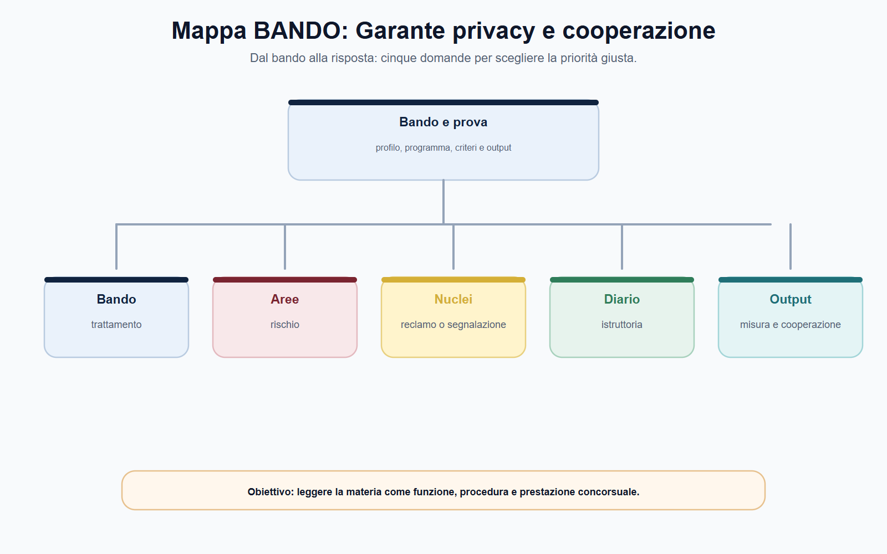
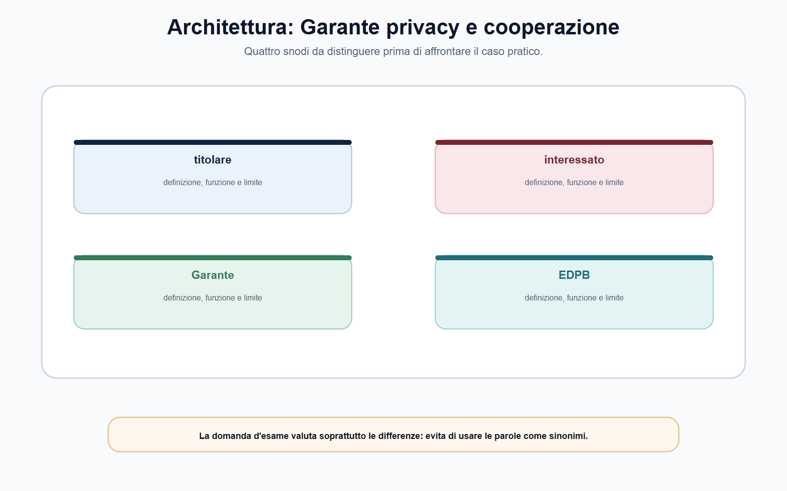
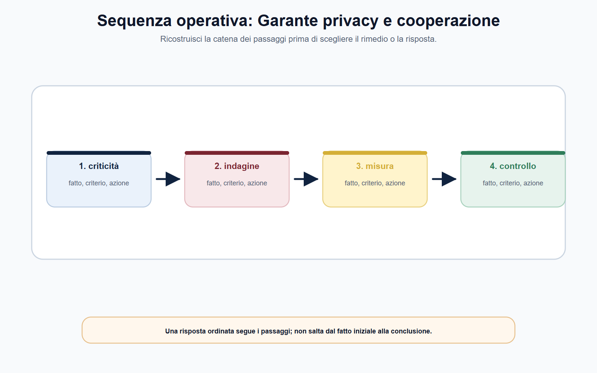
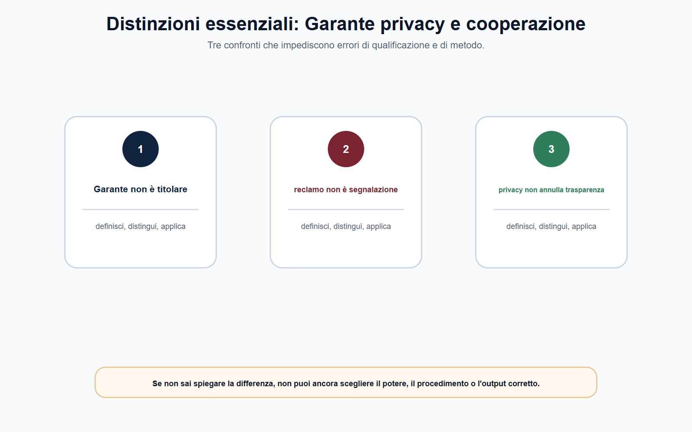

VOL-05 · Capitolo 13
M-FC05
Garante privacy:
poteri, procedimenti, cooperazione
La protezione dei dati non consiste nel tenere nascosta qualunque informazione. È un sistema di regole sul potere di raccogliere, usare, conservare, comunicare e rendere accessibili dati riferibili a persone fisiche. Il Garante sorveglia l'applicazione nei limiti del GDPR, del Codice privacy e delle altre fonti rilevanti.
01 · Il problema in prova
Non partire dalla parola «privacy»
Quale trattamento è contestato, chi ne determina finalità e mezzi, quale diritto o obbligo è in gioco, quali prove sono disponibili e quale potere può essere esercitato nel procedimento corretto? Si parte dal trattamento concreto, non dalla sanzione.
Che cos'è
Il Garante per la protezione dei dati personali è l'autorità di controllo indipendente prevista dal GDPR. Non sostituisce il titolare, non redige l'informativa al suo posto e non è lo sportello di ogni disaccordo con un ente o un'impresa.
A che serve in prova
A distinguere il Garante da AGCOM: qui si tratta di dati personali, non di reti, media o piattaforme come tali. E a respingere le due riduzioni opposte: sportello di ogni lite, oppure autorità delle sole multe.
Il Garante non è il titolare del trattamento.
Chi determina finalità e mezzi resta accountable. Il Garante verifica, interviene nei casi previsti, promuove consapevolezza e contribuisce alla coerenza europea. I poteri correttivi e sanzionatori stanno in un procedimento che collega fatto, norma, prova, contraddittorio e misura proporzionata.
02 · BANDO
Cinque decisioni su questo capitolo
Cerca GDPR, Codice privacy, reclamo, poteri correttivi, autorità capofila, EDPB e bilanciamento con la trasparenza.
| Che cosa fai | Se la salti | |
|---|---|---|
| B — Bando | Segna Garante, GDPR, Codice privacy, reclamo, ispezione, sanzione, cooperazione UE. | Studi «privacy» come slogan. |
| A — Aree | Collega titolare, responsabile, DPO, interessato, pubblicazione PA, trattamento transfrontaliero. | Confondi il Garante con AGCOM o con il DPO. |
| N — Nuclei | Reclamo ≠ segnalazione; indagine ≠ correzione ≠ sanzione; capofila ≠ sportello unico automatico. | Prometti la multa o lo sportello unico senza presupposti. |
| D — Diario | Segna «ogni reclamo finisce con una sanzione» e «online = autorità del fornitore». | Ripeti le due trappole all'orale. |
| O — Output | Catena trattamento → regola → fatto → prova → potere → misura. | Parere generico su riservatezza e trasparenza. |
03 · Soggetti
Accountability prima del Garante
Il Codice privacy, come adeguato al Regolamento europeo, completa il quadro negli spazi lasciati agli Stati membri. Il regolamento del Garante sui procedimenti con rilevanza esterna organizza il percorso interno. Non si oppone «GDPR europeo» a «Codice nazionale»: si individua il rapporto tra le fonti.

Titolare, responsabile, RPD/DPO, interessato e Garante hanno funzioni distinte. Il DPO consiglia e coopera: non assume le decisioni del titolare.
04 · Distinzione
Garante privacy non è AGCOM
Il Garante controlla i trattamenti di dati personali. AGCOM regola comunicazioni, media, utenti e, nei limiti delle fonti, piattaforme. Un sito, una piattaforma o una pubblicazione possono toccare entrambi i piani: il riparto si fa sul trattamento e sulla fonte, non sul mezzo digitale.
| Soggetto | Funzione nel trattamento | Domanda da porre |
|---|---|---|
| Titolare | Determina finalità e mezzi. | Perché e come vengono trattati i dati? |
| Responsabile | Tratta per conto del titolare. | Quale contratto o atto disciplina il trattamento? |
| RPD/DPO | Consiglia, sorveglia, coopera con l'autorità. | Ha potuto operare con autonomia e risorse? |
| Interessato | Esercita diritti e può attivare tutele. | Quale dato o diritto è concretamente coinvolto? |
| Garante | Controlla e interviene nei limiti normativi. | Quale potere e quale procedimento? |
05 · Poteri
Indagare, correggere, sanzionare, consultare
I poteri non sono una graduatoria inevitabile. L'ammonimento non precede sempre una sanzione e la sanzione non è necessariamente la misura più adatta. Le sanzioni, quando previste, devono essere effettive, proporzionate e dissuasive: non si deducono da uno schema astratto o dalla risonanza del caso.
| Famiglia | Finalità |
|---|---|
| Indagine | Acquisire fatti, documenti, sistemi, log, informative, procedure. |
| Correttivi | Avvertimenti, ammonimenti, ingiunzioni, ordini sui diritti, limitazioni, cancellazione. |
| Sanzionatori | Reagire alla violazione nei casi e nei limiti previsti. |
| Autorizzatori / consultivi | Parere, consultazione o atto previsto dalla disciplina. |

06 · Atti
Reclamo e segnalazione non coincidono
Il reclamo è un atto circostanziato con cui l'interessato rappresenta una violazione. Può seguire un'istruttoria preliminare e, se necessario, un procedimento formale che può condurre all'esercizio dei poteri dell'articolo 58 GDPR. La segnalazione è uno strumento distinto: può far emergere una non conformità da valutare.
| Passaggio | Cosa va verificato |
|---|---|
| Fatto | Trattamento, dati, finalità, soggetti, periodo. Cronologia essenziale. |
| Diritto o obbligo | Accesso, informativa, minimizzazione, sicurezza, base giuridica o altra regola. |
| Prova | Comunicazioni, screenshot, log, policy, registro, contratti, risposte. |
| Istruttoria | Competenza, rilevanza, chiarimenti, contraddittorio. |
| Misura | Correzione, ordine, limitazione, sanzione o archiviazione secondo il caso. |
Ogni reclamo deve concludersi con una sanzione? No. L'esito dipende da competenza, fatti, prova, fonte e potere proporzionato. Possono rilevare archiviazione, misure correttive o altri esiti previsti. Il ricorso al Garante non elimina i rimedi giurisdizionali.
07 · Sequenza
Dalla criticità al provvedimento
Non basta affermare che «sono stati violati dati personali». Occorre capire quali dati, chi li ha trattati, con quale finalità, su quale base, per quanto tempo, con quali destinatari e con quali misure di sicurezza. Una violazione di sicurezza non si esaurisce nel fatto tecnico.

Catena da scrivere sempre: trattamento → regola → fatto → prova → potere → misura → tutela. Se salta una freccia, si attribuisce un potere non verificato.
08 · Cooperazione
Sportello unico non è automatico
Quando ricorrono i presupposti del trattamento transfrontaliero, opera la cooperazione tra autorità capofila e autorità interessate. Lo sportello unico è un meccanismo procedurale, non una sola autorità per ogni piattaforma digitale. Un cittadino non deve rinunciare alla propria autorità nazionale.
| Livello | Cosa non confondere |
|---|---|
| Garante nazionale | Non è automaticamente capofila in ogni caso digitale. |
| Autorità capofila | Coordina il caso transfrontaliero; non cancella le interessate. |
| Autorità interessate | Cooperano e restano riferimento per gli interessati. |
| EDPB | Coerenza, linee guida, pareri e decisioni vincolanti nei casi previsti. Non è il giudice di ogni reclamo. |

09 · PA
Trasparenza e privacy: bilanciamento, non conflitto astratto
Nella PA molte questioni nascono dal rapporto tra obblighi di pubblicità, richieste di accesso e protezione dei dati. Non si sceglie in astratto «trasparenza» o «riservatezza». Si identifica la norma che impone o consente la pubblicazione, si verifica quali dati siano necessari e si applicano le cautele. Pubblicare un atto non implica diffondere ogni dato contenuto nell'atto.
Norma
Quale fonte impone o consente la pubblicazione o l'accesso?
Necessità
Quali dati sono pertinenti rispetto alla finalità? Minimizzazione.
Documentazione
L'ufficio progetta il trattamento in modo conforme. Non attende il reclamo per decidere se la pubblicazione è lecita.
L'intervento del Garante può correggere una non conformità o orientare l'applicazione. Non sostituisce l'organizzazione responsabile dell'ente e non coincide con i poteri AGCOM su contenuti o piattaforme.
10 · Caso guidato
Piattaforma per candidature e pubblicazione eccessiva
Un ente usa una piattaforma concorsuale. Il fornitore conserva documenti oltre la fase necessaria; una sezione pubblica rende scaricabili elenchi con dati ulteriori rispetto alla pubblicità della graduatoria. Alcuni candidati presentano reclamo. Ciascuno attribuisce all'altro la responsabilità. Si invoca subito lo sportello unico perché il servizio è usato anche all'estero.
| Passaggio | Ragionamento |
|---|---|
| Ruoli | Chi determina finalità e mezzi per gestione e pubblicazione? Quale ruolo ha il fornitore? Contratto, registro, istruzioni, log. |
| Pubblicazione | Base normativa, necessità dei dati diffusi, minimizzazione. |
| Conservazione | Finalità, tempi, misure organizzative, informazioni rese. |
| UE | Il semplice uso della stessa tecnologia in altri Stati non basta a individuare un'autorità capofila. |
| Chiusura | Né «multa certa» né «privacy contro trasparenza»: trattamento e ruoli → regola → prova → procedimento → misura → eventuale cooperazione. |
11 · Verifica
Due domande da saper spiegare
Poteri del Garante e cooperazione europea
Il Garante è l'autorità di controllo italiana. Non sostituisce il titolare. Esercita poteri di indagine, correttivi, sanzionatori, autorizzatori e consultivi. Il reclamo è circostanziato; la segnalazione è distinta. Ogni provvedimento richiede fatti, prove, contraddittorio e motivazione. Nei trattamenti transfrontalieri cooperano capofila e interessate; l'EDPB assicura coerenza e può risolvere controversie tra autorità.
Se il servizio è online in più Paesi, decide sempre l'autorità della sede del fornitore?
No. Lo sportello unico opera solo con i presupposti GDPR del trattamento transfrontaliero. Vanno verificati trattamento, stabilimenti, effetti sugli interessati, capofila e interessate. Le questioni locali o sottratte al meccanismo seguono il riparto ordinario.
12 · Mini-esercizio
Diffusione indebita su una pagina istituzionale
Compila la griglia. L'esercizio è corretto se non identifica la sanzione prima di aver ricostruito trattamento, regola, prova e competenza.
| Campo | Appunto da raccogliere |
|---|---|
| Trattamento | Pubblicazione, consultazione o indicizzazione coinvolta. |
| Soggetti | Ente titolare, fornitore/responsabile, DPO e interessati. |
| Dati e finalità | Dati esposti, scopo, necessità e proporzionalità. |
| Fonti | GDPR, Codice privacy, norma di pubblicità o accesso, atto interno. |
| Prove | URL, schermate datate, atto pubblicato, informative, log, comunicazioni. |
| Percorso | Istanza al titolare, reclamo o segnalazione, Garante, giudice, cooperazione UE se pertinente. |
13 · Errori
Tre formule da non usare
Garante = AGCOM
Dati personali e regolazione delle comunicazioni sono perimetri diversi. Il mezzo digitale non unifica le competenze.
Reclamo = multa
Il reclamo apre valutazione e, se necessario, istruttoria. L'esito può essere archiviazione, misura correttiva o altro atto previsto.
Privacy vince sempre
Il bilanciamento con la trasparenza si fa sulla norma, sulla necessità dei dati e sulla documentazione. Non è uno scontro astratto.
Un ordine di limitazione o cancellazione può incidere su servizi, lavoro e libertà economiche; l'inerzia può lasciare esposti gli interessati. Base legale, istruttoria, partecipazione, motivazione e controllo restano indispensabili.
14 · Da tenere ferme
Cinque regole, con il perché
1. Si parte dal trattamento: dati, soggetti, finalità, base giuridica, rischio, documenti e rimedio.
2. Il Garante non sostituisce titolare, DPO o giudice e non coincide con AGCOM.
3. Reclamo e segnalazione sono strumenti diversi; indagine, correzione e sanzione non sono una scala automatica.
4. Lo sportello unico opera solo con i presupposti del trattamento transfrontaliero; l'EDPB non è il giudice di ogni reclamo.
5. In PA, pubblicare un atto non autorizza a diffondere ogni dato: necessità, minimizzazione, fonte.
15 · Cinque righe
Da sapere prima dell'orale
Il Garante controlla l'applicazione della disciplina sui dati personali, ma non sostituisce titolare, DPO o giudice. I suoi poteri includono indagine, correzione, sanzione, autorizzazione e consultazione nei rispettivi limiti. Reclamo e segnalazione sono strumenti diversi. Ogni misura richiede fatto, fonte, istruttoria, garanzie e motivazione. Nei casi transfrontalieri il GDPR coordina autorità capofila e interessate; l'EDPB assicura coerenza e può risolvere conflitti tra autorità nei casi previsti.
Scrivi fatti provati, allegazioni e elementi da acquisire. Poi confronta poteri correttivi con reclamo e segnalazione. Se la fonte lascia un margine, rendi espliciti gravità, durata, diffusione, rischio, collaborazione e proporzionalità.
Prossimo capitolo
ANAC: prevenzione, vigilanza, whistleblowing
Dai dati personali all'integrità dell'amministrazione. ANAC non è il committente e non gestisce i processi interni di ogni ente. Si parte dal processo e dal rischio.